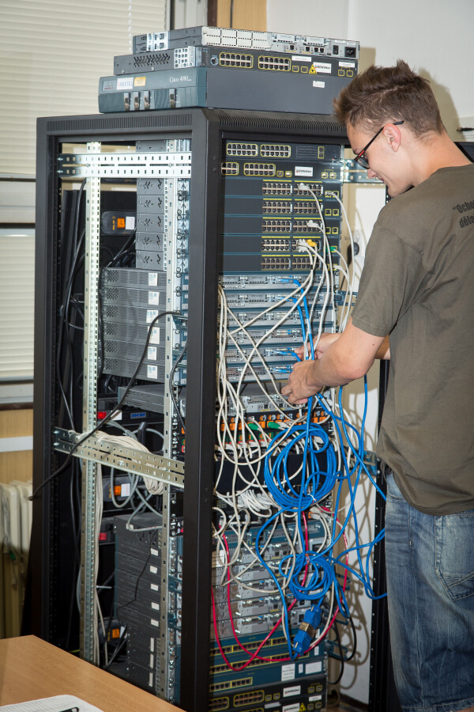

Informační technologie
18–20-M/01

Moderní pojetí studijního oboru reaguje na vývoj ve všech oblastech
informačních technologií. Žáci získají znalosti z oblasti zpracování
textu, multimédií a grafiky. Velký důraz je kladen na programování
desktopových i webových aplikací s návazností na databázové systémy s
použitím jazyků C++, C#, JavaScript a PHP. V oblasti počítačových sítí
se učí navrhovat strukturu, konfigurovat aktivní prvky a následně síť
realizovat a spravovat. Součástí oboru je administrace osobních a
serverových operačních systémů (MS Windows a Linux). Nechybí ani
oblast mikroprocesorové techniky. Novinkou v oboru jsou předměty
Kybernetická bezpečnost a Mobilní aplikace. Získané znalosti žáci
zúročí v samostatném ročníkovém projektu.